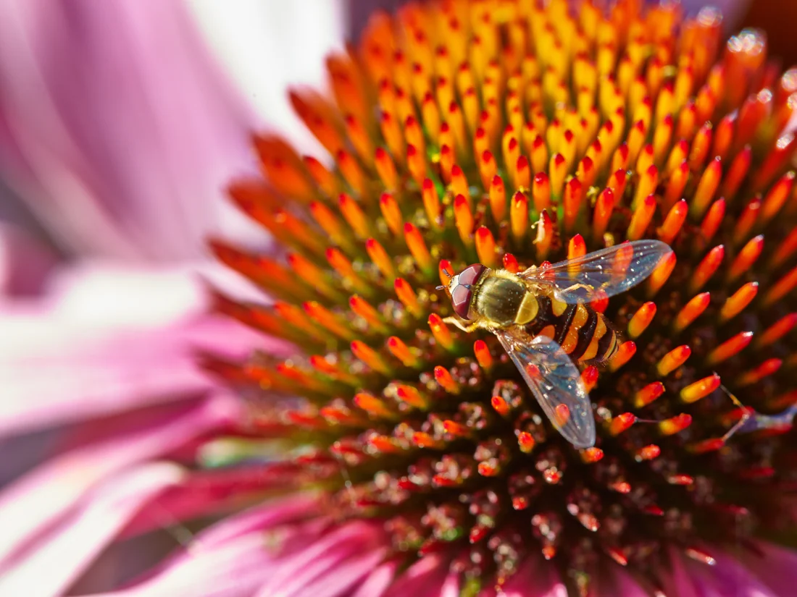

Chamomile
A botanical flower ingredient for infusion blends. Buyers should specify the desired form and cut size.
Ingredient profile ↗Browse flowers & botanicals in Verdleaf’s botanical catalogue. Review individual ingredient profiles, enquiry forms and sourcing requirements.
Flower or calyx integrity, cut size, foreign matter and colour.
A botanical flower ingredient for infusion blends. Buyers should specify the desired form and cut size.
Ingredient profile ↗
A botanical flower ingredient for selected infusion and ingredient applications.
Ingredient profile ↗
A tart botanical ingredient for herbal infusions and beverage formulations.
Ingredient profile ↗
A botanical ingredient. Confirm species, plant part and intended use with the export team.
Ingredient profile ↗